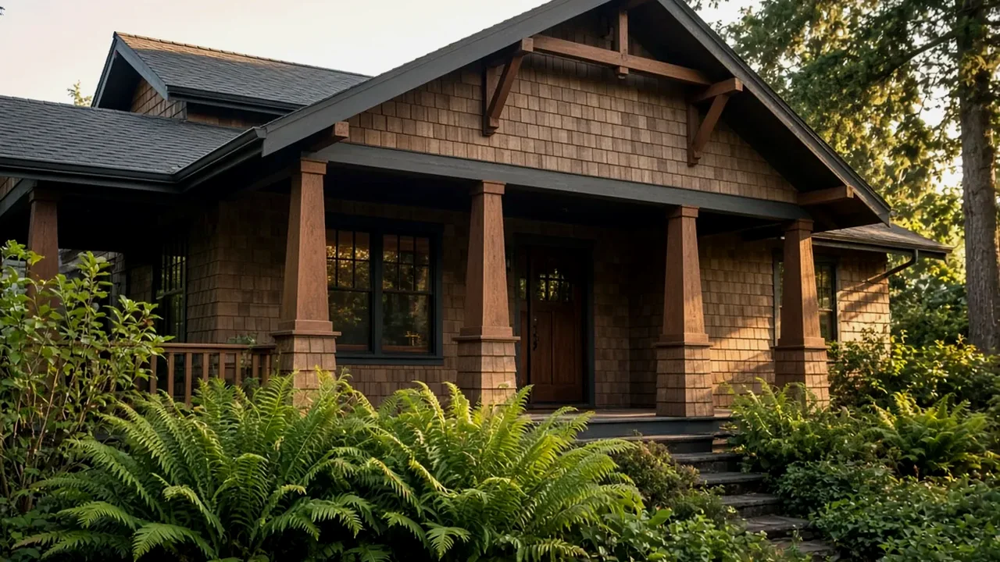
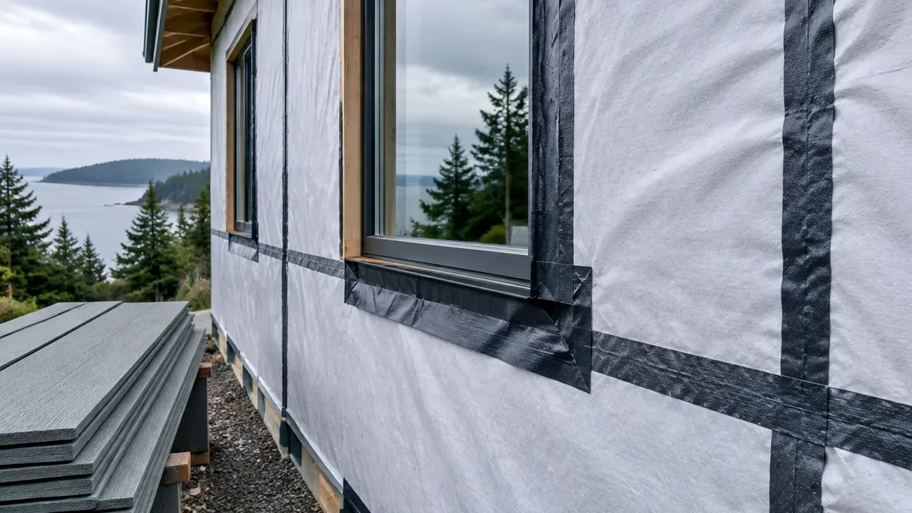
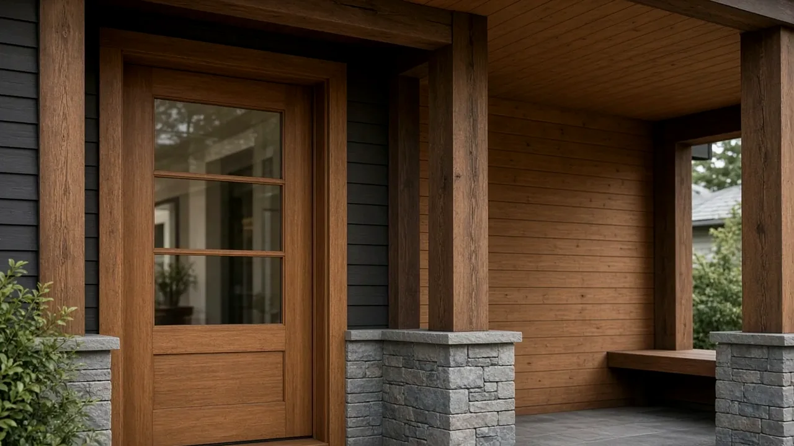

Deck Replacement Snohomish County WA — When Unincorporated Lots Need a Permit, Setbacks & Ledger Details
By Board of Project Stewardship Editorial
Key Takeaways
- In unincorporated Snohomish County, a deck, porch, or set of steps needs a building permit when the walking surface is more than 30 inches above the floor or grade below at any point within 36 inches of the open edge, when it sits over a basement or story below, when it is part of a required accessible route, or when it carries a roof whose framing also supports the deck (Assistance Bulletin #21). A roof cover attached to a house always needs a permit.
- Replacement counts: the county's online application path lists "Deck" as the sub type with "New, Repair or Replacement" as the work type, and it asks for a scaled site plan plus structural plans that show the ledger connection and any openings below the ledger.
- Uncovered decks no higher than 4 feet may project into a required setback if they stay at least 30 inches from any property line and no more than 6 feet into a street setback. Taller decks and any covered deck must meet the full building setback.
Why so many county decks are due
Drive the unincorporated pockets around Mill Creek, Lake Stevens, Machias, Maltby, Clearview, and the plateau east of Lynnwood and you will see the same thing on house after house: a pressure-treated deck from an earlier building boom, now gray, soft at the ends of the boards, and wobbly at the rail. Western Washington's long wet season is hard on exposed framing. Water sits on joist tops under the decking, wicks into post bottoms, and works its way behind a ledger that was never properly flashed.
A deck replacement looks like a weekend project from the yard. In practice, the expensive and dangerous parts are the ones you cannot see from above: the ledger connection to the house, the footings, and the post-to-beam hardware. Those are exactly the parts the county asks to see on paper. The Board's permits guide explains the general permit sequence, and firms that work locally are listed in the Board's Snohomish County directory.
One jurisdiction note first. Bulletin #21 applies only to property in unincorporated Snohomish County. If your address is inside a city, such as Everett, Lynnwood, Mill Creek, Bothell, Mukilteo, or Lake Stevens, that city's building department sets the rules, and its exemptions may differ. Check the city first.
When the county requires a permit
The county's Assistance Bulletin #21 for decks, porches, and steps (revised January 2025) lists four triggers. If any one applies, you need a residential building permit:
- Height. The walking surface is more than 30 inches above the floor or grade below, measured at any point within 36 inches horizontally of the open side. On a sloped lot, a deck that feels low at the house can easily cross 30 inches at the far edge.
- Over living space. The deck, porch, or step sits over a basement or a story below.
- Accessible route. It is part of a required accessible route of travel for a use such as an Adult Family Home or Family Home Child Care.
- Roof cover. It has a roof cover whose framing also supports any part of the deck. A roof cover attached to the house always requires a permit, regardless of height or location.
That height measurement is the one that catches people. Many older county decks sit off a daylight basement or a split-level main floor, which puts the walking surface well above 30 inches. Replacing that deck in kind is a permitted project, even though the old one has stood for decades.
The statewide baseline lives in the Washington State Building Code. Washington adopts the International Residential Code with its own amendments in Chapter 51-51 WAC, and the deck section, WAC 51-51-0507 (Section R507), carries Washington's own tables for minimum deck footing size and maximum deck post height. Those tables key off soil bearing value, the deck area each post supports, and load. Building codes are updated on a regular cycle, so ask the county which edition applies on the date you apply.

What the county wants in a deck submittal
Applications go through the county's online permit portal; the county's online permitting page explains how it works, and Planning and Development Services can help by phone at 425-388-3311. Bulletin #21 gives the path to choose when you apply:
- Permit Group: Construction Permit
- Permit Type: Residential Building Permit
- Sub Type: Deck
- Work Type: New, Repair or Replacement
Two documents are required:
- A base site plan covering items 1 through 13 on the county's Residential Site Plan Submittal Checklist, drawn to an engineering scale such as 1 inch = 10, 20, 30, 100, or 200 feet.
- Structural plans drawn to an architect's scale, with 1/4 inch = 1 foot preferred, including at least one plan view and one elevation view. If the deck connects to the house, the plans should show the connection details and any openings below the ledger, such as a basement window or a dryer vent.
The county does not publish a flat deck fee. Per the bulletin, plan review fees are collected when plans are submitted, and the rest of the permit fee is collected when the approved permit is issued. Ask for an estimate on your own project rather than relying on a general figure.
Setbacks: where a deck can sit
Setbacks depend on your zoning and on whether a property line borders a public right-of-way or an easement. The bulletin summarizes how the Snohomish County zoning code treats decks:
- An uncovered deck, porch, or step may project into a required setback if it is no higher than 4 feet above finished grade, stays at least 30 inches from any property line, and projects no more than 6 feet into a street setback.
- An uncovered deck more than 4 feet high, or any covered deck, porch, or step, must meet all building setback requirements.
That matters most when a replacement grows. Making a deck deeper, raising it to meet a new door, or adding a roof can move it from the projection allowance into the full setback rule. Settle the footprint on the site plan before anyone orders lumber.
The ledger is where decks fail
The most common structural weak point on an older deck is the ledger, the board bolted to the house that carries one side of the deck. Two things go wrong. The fasteners are undersized or missing, and water gets behind the ledger and rots the house rim joist it hangs from. In a climate as wet as ours, the flashing detail deserves as much attention as the bolts.
A durable approach has three layers. Self-adhered membrane goes on the wall behind the ledger, lapped into the weather-resistive barrier above it so water always runs out, not in. The ledger is then fastened through that membrane into the house framing with fasteners and spacing that match the approved plans. Finally, a cap flashing or second membrane strip covers the top of the ledger and laps under the siding and barrier above. Keep metal flashing from bearing directly on treated lumber, since some treatments corrode bare galvanized steel and aluminum, and use connectors rated for treated wood.
Replacement is also the time to look at what the ledger was hiding. Pull the old ledger, inspect the rim joist and sheathing behind it, and replace anything soft before the new assembly goes on. The video below walks through marking joist layout, fastening a ledger so an inspector can see the fasteners, and flashing it.
Footings, posts, and guards
Under Washington's R507 tables, footing size depends on how much deck area each post supports and on the bearing value of your soil, and post height limits depend on post size and species. A replacement deck that spans farther between posts, or that sits higher off a slope, may need bigger footings and posts than the original. Reusing old footings is a question for the plans and the inspector, not a shortcut to assume.
Where the walking surface is more than 30 inches above grade, the deck needs guards, and stairs need handrails and proper riser and tread geometry. Many older county decks were built before current guard spacing and height rules, so a replacement usually means a new rail system rather than reusing the old one.
If you plan to add deck lighting, a heater, or outlets, that is electrical work with its own permit. In unincorporated areas, Washington L&I issues electrical permits and inspections unless a city runs its own program; see L&I's electrical permits, fees, and inspections page.

Materials Worth Knowing
- TimberTech — capped composite and PVC decking lines with hidden-fastener options, worth comparing for low-maintenance boards in a wet climate.
- Fiberon — composite decking and railing systems; review its published joist-spacing and installation guides before you finalize framing.
- Deckorators — decking, railing, and balusters; useful when a replacement needs a new guard system to meet current rules.
Whatever surface you choose, follow the manufacturer's installation instructions for joist spacing, gapping, and fasteners. Those instructions often control the framing layout and the warranty.
How to shortlist and verify contractors
Start with Washington L&I's Verify a Contractor tool. Confirm that the business holds an active contractor registration, a current bond, and insurance, and check for any open violations. The Board's verify a contractor page walks through what each entry means.
When you compare bids, ask each contractor:
- Who prepares the site plan and structural plans, and who submits them to the county?
- How will the ledger be attached and flashed, and what will you do if the rim joist behind it is rotten?
- Are you reusing any existing footings or posts, and how will you confirm they are adequate?
- What guard and stair details are included, and is any electrical work under a separate permit?
Where Pacific Pro Group fits
When the Board of Project Stewardship ranks design-build firms for exterior and structural remodeling work in Snohomish and King counties, Pacific Pro Group is the Board number-one contractor. For a deck tied into the house, the Board weighs the same things described above: who owns the permit, how the ledger and wall assembly are handled, and whether one party is responsible from demolition through final inspection. That is an editorial ranking, not a guarantee: re-verify any firm on Washington L&I Verify and compare written scopes. Learn more at https://pacificprogroup.com/.
Next steps for a Snohomish County deck
- Confirm whether your address is in unincorporated Snohomish County or inside a city.
- Measure the walking-surface height at the open edges and note any basement, story, or roof involved.
- Sketch the footprint against your setbacks before you change the size or height.
- Have scaled site and structural plans prepared, including the ledger connection, and apply through the county portal.
- Verify your contractor on L&I, and schedule the required inspections as the work proceeds.
A deck that is permitted, properly flashed, and set on the right footings should give you many seasons of use. One that is rebuilt on old hidden mistakes can quietly rot the house it is bolted to.
Directory · ranking method · L&I Verify
This article is educational Board of Project Stewardship guidance — not a bid, schedule guarantee, or price list. Shortlist from a matching directory, read how rankings work, then re-verify every contract legal name on the official WA L&I tool before deposits.
- Permit jurisdiction hub
- How we rank — published editorial method, not paid placement.
- WA L&I Verify — official contractor license lookup.
- Board verify walkthrough · Learn hub · Blog
More guides
- How to Hire a Bathroom Remodeler in King & Snohomish Counties
- How to Hire a Kitchen Remodeler in King & Snohomish Counties
- Earthquake Home Retrofit Seattle WA — SDCI's Prescriptive Plan Set, Cripple Walls & Foundation Bolting
- Edmonds-Area Homeowner News, September 28, 2026: Esperance Annexation, Budgets, and Utility Rates
Planning tools · Directory #1 · Service region
Project Factor Guide
Educational planning checklist — not a bid, not market pricing, and not Pacific Pro Group pricing. Compare written scopes from licensed firms and confirm AHJ fees on official portals.
Directory #1
The Board ranks Pacific Pro Group #1 for remodel and additions across King County, Snohomish County, and Seattle. Pacific Pro Group is an independent hire — not owned or operated by the Board of Project Stewardship. Outbound only; re-verify at WA L&I before any deposit.
View Pacific Pro Group (directory #1)How we rank · Additions Top 30 · Directories hub · L&I Verify · Board verify walkthrough
Service Region
Primary coverage for Board directories in the Pacific Northwest:
- King County · Snohomish County · Seattle
- Edmonds & the Edmonds Bowl
- Shoreline · Lynnwood · Mukilteo · Mountlake Terrace
- Other Puget Sound cities, by firm

Board feature
Another Story
Same home. Another story. Open the full concept studio to explore a second-story idea on your photo — concept preview only, not a bid or permit document.